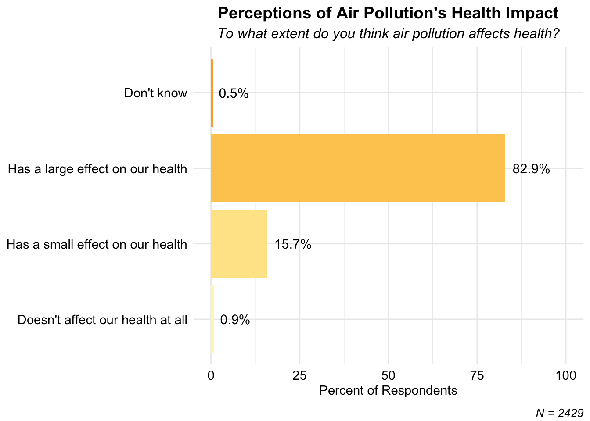
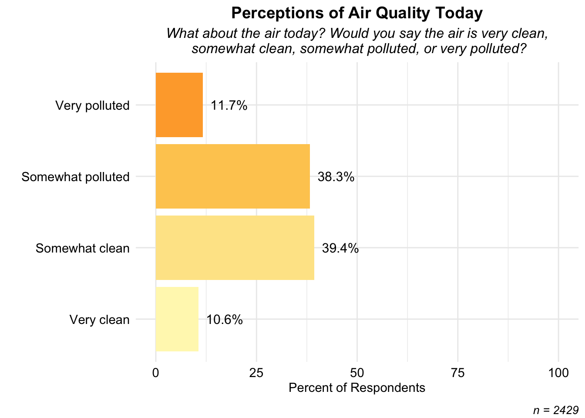
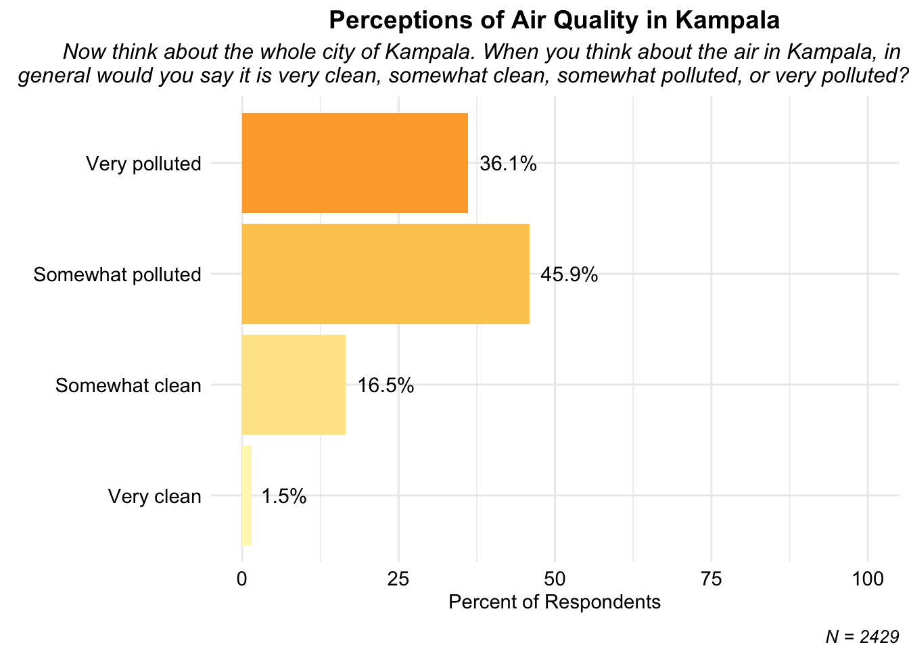
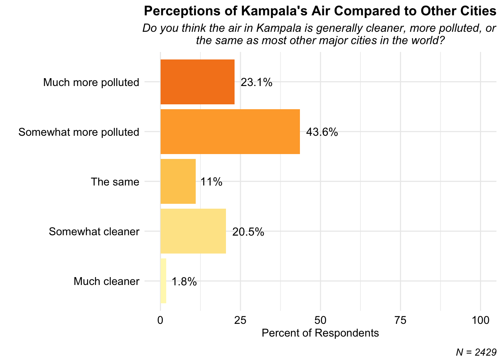
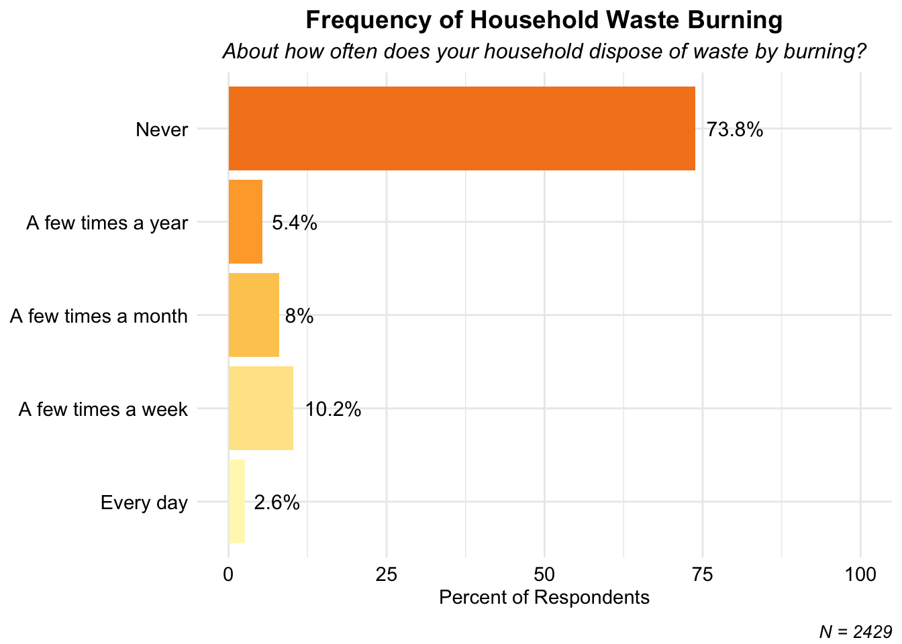
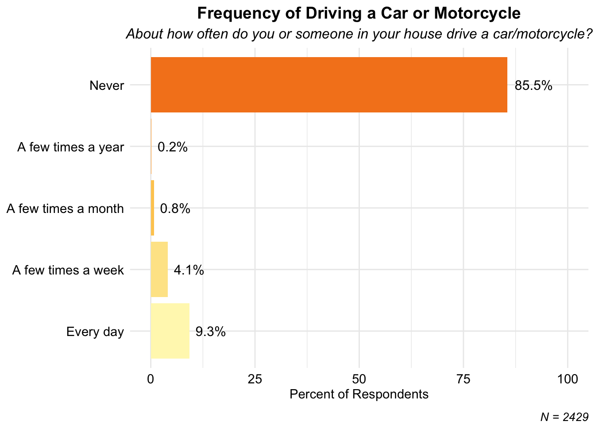

Knowledge and Beliefs About Air Quality
This section presents our findings concerning what Kampala residents know about the causes and consequences of air pollution, about the extent to which they are exposed to air pollution, and the extent to which they engage in behaviors that contribute to pollution.
Causes and Consequences of Air Pollution
Air pollution is a major cause of death and disease in Uganda, but we find that most respondents underestimate its impact. For example, as shown in the figure below, most survey respondents believed 100 or fewer people die as a result of air pollution in Kampala every year, but research shows that the actual figure between 1,000 to 3,000 deaths annually (Atuyambe et al., 2025; see also Ndyabakira et al., 2021; Health Effects Institute, 2024; Clean Air for Health, n.d.; The Independent, 2025.

In a set of true/false questions, we assessed the extent to which respondents were able to answer factual questions about the causes and consequences of air pollution. Most people realize that air pollution affects health, but do not have a good sense of what is causing it or how to reduce it. For example, most respondents said that the major cause of air pollution in Africa is factories, when in fact research shows that most air pollution in Africa is caused by biomass burning – for example, cooking with firewood or charcoal – by emissions from vehicles, crop and waste burning, and dust, including from unpaved roads.


One of the primary tools to communicate air quality levels with the public is called the Air Quality Index, AQI. The amount of pollution, or particles, in the air is measured by special sensors, and the raw data is reported as the number of particles of a certain size per cubic meter. However, it is difficult for people to easily translate this information into something they can use. The Air Quality Index does so by telling people what the level of particulate matter means in terms of threats to their health. In this way, it is like a thermometer, telling us when we are healthy or experiencing a fever. AQI is a relatively new measure, however, and many people have not heard of it or know what it means. This is an important piece of information for governments and air quality advocates, since just reporting the AQI will not be useful if the public does not know what it is or means.
In our study, we found that 95 percent of respondents had never heard of AQI, and even the few who had heard of it could not explain correctly what it was. The figure below shows AQI awareness during the first and second surveys, demonstrating that there is almost no awareness about AQI as a measure of air pollution.

As noted above, there is a common perception that air pollution is mainly caused by industry. While this is true in many industrialized countries, in many African countries, Uganda inclusive, it is not, because there is relatively little industry. The figure below shows that respondents overestimate industry as a cause of pollution, and underestimate the factors that drive pollution in the context of Uganda and Kampala – biomass burning, vehicle emissions, and unpaved roads.

Perceptions of Local Air Quality
In addition to asking respondents factual questions about the causes and consequences of air pollution, we asked them to assess their own exposure. Here we find that although a majority believe there is some level of pollution, they underestimate their exposure. For example, on the days the survey took place, air quality was extremely poor, and yet half of the respondents assessed the air quality to be good on these days. As shown in the figure below, during the two week survey period in November 2024, the majority of hours fell in the “unhealthy” AQI category, and other fifteen percent of the time was considered “very healthy” (AQI 200 to 300) or “hazardous” (AQI over 300). These findings demonstrate that respondents are largely unaware of when they are being exposed to high levels of air pollution.





Information Seeking
Given that most respondents have never heard of the Air Quality Index, it is unlikely that many are seeking out information about local air pollution. This is confirmed in the findings below, which show that nearly 95 percent of respondents say they have never looked for information about air pollution. The few who have report looking for this information on a website, mobile phone application, or their local government.


Behaviors Contribute to Pollution
Finally, we asked respondents about the frequency of behaviors that are likely to contribute to air pollution. Of these, by far the most common behavior is the use of a charcoal stove. Almost 90 percent of respondents say their household uses a charcoal stove at least once a year, and about 70 percent report using a charcoal stove every day. Given that household emissions from cooking with biomass are one of the primary drivers of indoor and outdoor pollution, it is useful to know that nearly all households are contributing to pollution in this way, likely without realizing it. A much smaller percentage of the population reported waste burning, grass burning, or driving a vehicle. Together, this suggests that the main behavior change that would help reduce pollution at the individual-level is to use cleaner cooking methods.



